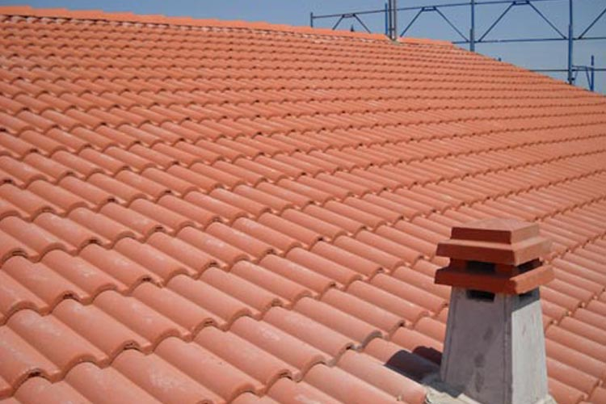

Genova Camper, Vendita Camper Nuovi e Usati, Accessori e Riparazioni
Home Camper nuovi Camper usati Furgonati Ricambi e accessori Accessori per il tuo camper Ricambi per il tuo camper Assistenza e servizi Manutenzione del camper Riparazioni camper e caravan Installazione accessori Gestione Sinistri Rimappature Centraline Corso tecnico pratico sulla gestione del Camper Contatti
CAMPER PER TUTTI
Camper nuovi
Scopri la gamma Caravans International, Malibu e MobilvettaCamper usati
Occasioni sul pronta consegna sul nostro usato garantitoCamper Furgonati
Più avventura, più maneggevoli, meno costi, meno manutenzione, scoprili.Assistenza Camper
Riparazione ed allestimenti , Manutenzione, Gestione sinistriGenova Camper Market
Prodotti di consumo, ricambi e accessori Fiamma, elettronicaUltimi arrivi
Adria Twin Supreme 640 SGX
Furgonato Letto Basculante Portamoto
€ 60.250,00
Leggi la scheda
Adria Matrix Axess 670 SL
Semintegrale Basculante e Letti Gemelli
€ 61.000,00
Leggi la scheda
Malibu Van 640 LE
Furgonato letti gemelli
€ 51.950,00
Leggi la scheda
Malibu Van 640 LE RB
Furgonato letti gemelli
€ 53.790,00
Leggi la scheda
Malibu Van 600 GT
Furgonato Top di Gamma
€ 54.975,00
Leggi la scheda
Elnagh King
Mansardato 5 Posti Letto
€ 14.900,00
Leggi la scheda
Mobilvetta Bussola
Mansardato 5 Posti Letto
€ 17.000,00
Leggi la scheda
Adria Twin Supreme 640 SLB
Furgonato LettI Gemelli Cambio Automatico
€ 59.000,00
Leggi la scheda
Malibu Van 600 DB
Furgonato Super Accessoriato
€ 57.900,00
Leggi la scheda
Laika Ecovip 200i
Motorhome 7 Posti Letto
€ 17.900,00
Leggi la scheda
Elnagh Marlin 65 G
Mansardato con Garage
€ 19.900,00
Leggi la scheda
CI Elliot 5
Mansardato Letti a Castello
€ 22.900,00
Leggi la scheda
Laika Ecovip 5 L
Mansardato 4 Posti Portamoto
€ 14.900,00
Leggi la scheda
CI Magis 95 XT Elite
Semintegrale Basculante e Garage
€ 55.990,00
Leggi la scheda
CI Magis 87 XT Elite
Semintegrale Basculante e Letti Gemelli
€ 56.990,00
Leggi la scheda
Ultime dal blog
Leggi tuttoA spasso con the Reds on the Road!
Leggi tuttoPatente per camper: quale serve per guidare?
Leggi tuttoViaggiare in camper per viaggiare al sicuro
Leggi tuttoA spasso con the Reds on the Road!
Stai cercando un pezzo di ricambio per il tuo Camper?
Mandaci subito la tua richiesta
Scopri di più su Genova Camper
Genova Camper è Il Blog dei camperisti Entra a far parte di Genova Camper Le vostre recensioni su Facebook Eventi e Porte Aperte Le nostre misure anti covid19Genova Camper Concessionario
Centro assistenza
Concessionario associato
Seguici sui Social
Vi aspettiamo In Via Maffei 27/r 16162 Genova
lunedì e sabato: mattina 8:30 – 12:30, dal martedì al venerdì: mattina 8:30 – 12:30 pomeriggio 15:00 – 19:00, domenica Chiuso
010 7172181 - info@genovacamper.it
Messaggiaci su WhatsApp 3756222480
© 2005-2020 Genova Camper S.r.l. via Maffei 27/r 16162 Genova P.IVA e CF: 01580250999 REA GE: 419978 - Capitale sociale: euro 40.000,00
Cookie Policy | Privacy Policy | Powered by Giorgia Calvi